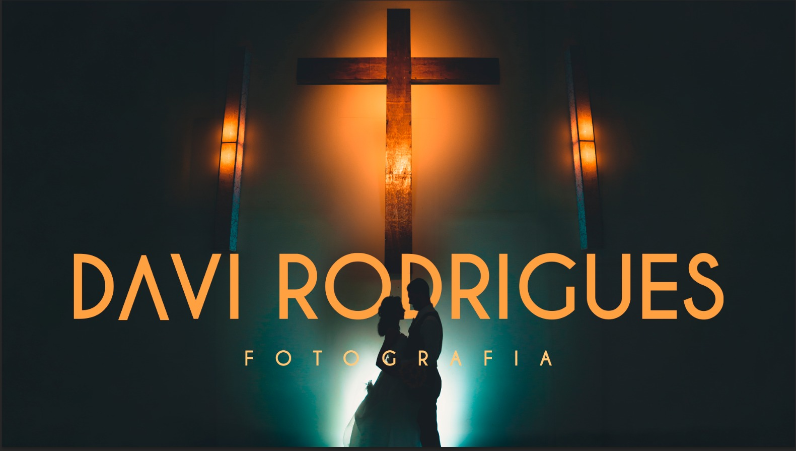

Davi Rodrigues Fotografia
Taubaté — Vale do Paraíba e Litoral Norte, desde 2014
Não fotografo eventos. Faço parte da história de famílias.
Comecei em 2014, numa aula de fotografia na faculdade.
Hoje fotografo o noivado, o casamento, o chá revelação,
o batizado, o primeiro aniversário e a festa de quinze anos —
as fases pelas quais uma família inteira passa.
É por isso que a frase acima não é força de expressão.
O que eu fotografo
- Casamento Do making of ao encerramento da pista, com uma segunda fotógrafa comigo o dia inteiro. Ensaio antes sempre incluso, e sem limite de cliques. Oitenta e três até aqui, entre civis e religiosos. →
- Ensaios Mais de cento e trinta. É onde eu mais brinco com luz — e é a etapa que vem antes de todo casamento e toda festa de quinze anos que eu fotografo. →
- Debutantes Quatorze festas de quinze anos. O ensaio vem semanas antes, para ela e a família me conhecerem — na festa, isso aparece na cara delas. →
- Aniversários Setenta e duas festas — é o evento que mais fotografei na vida. →

Ver ensaios
Você deixou tudo muito leve, amei de verdade. Amamos as fotos.
Dois casamentos por mês
Nunca mais que isso, e nunca dois no mesmo fim de semana. É o que me permite editar cada foto à mão — e estar com a minha família também.
Ver se sua data está livre